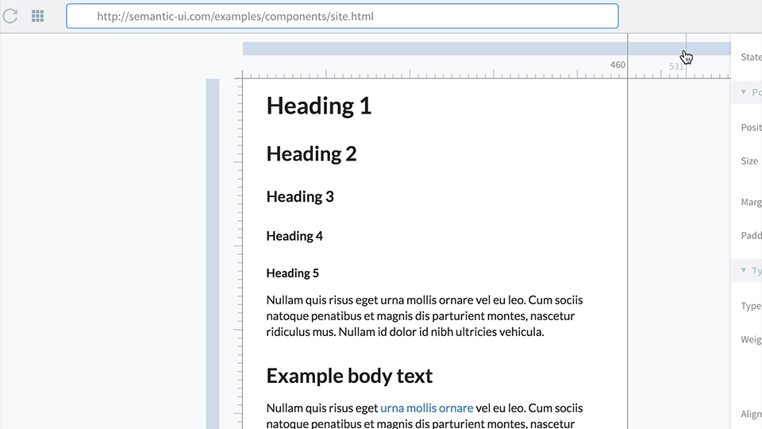
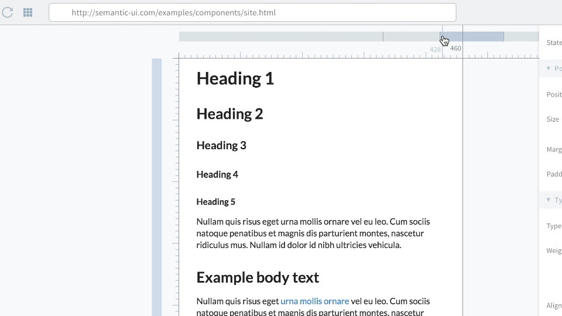

Media Editor lets you create and adjust element style in certain browser width or height.
To activate Media Editor, navigate in main menu View->Media Editor or use ⇧ E
To create a new breakpoint click on the media query bar at the preferred position.

click to add new breakpoint
To make changes only in a certain media range, click on the media range.
Use ⇧ click to select multiple media queries.

⇧ click to select multiple media queries